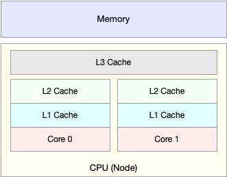
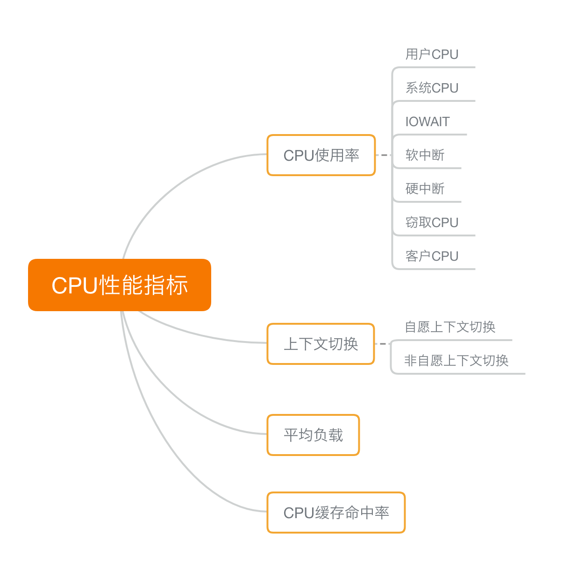
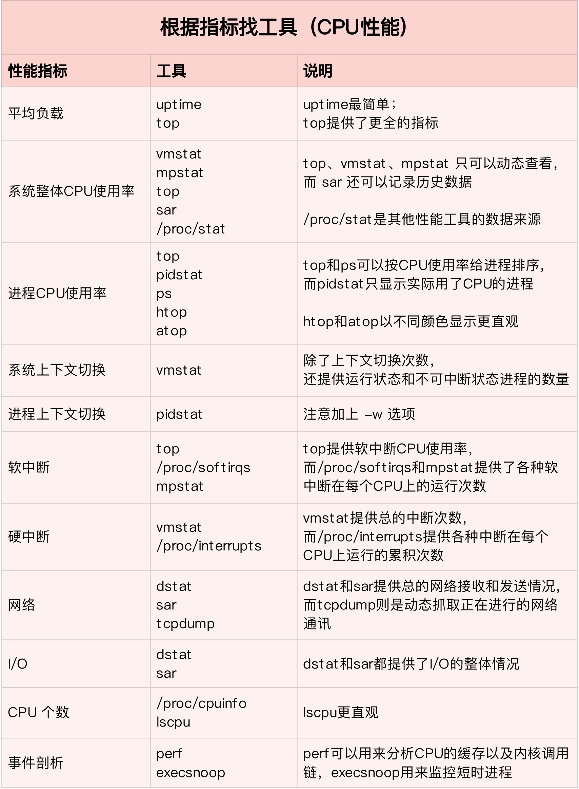
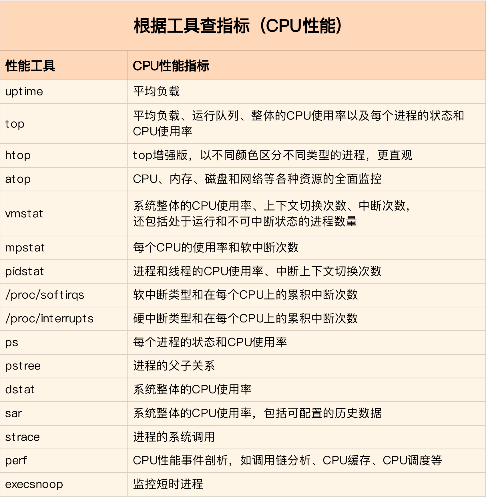
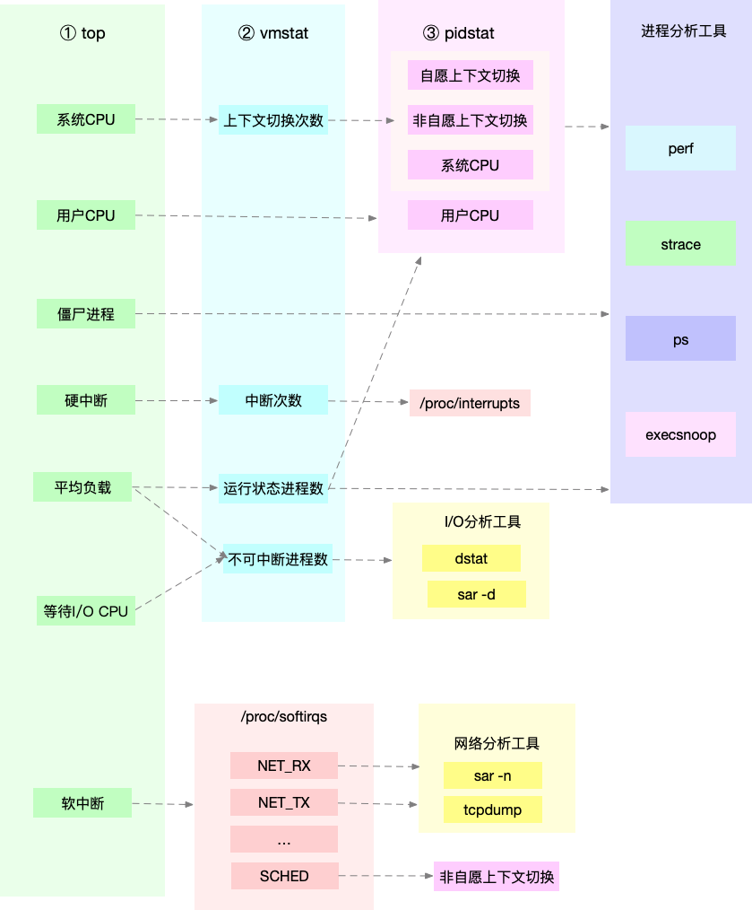

cup性能指标
首先联想到cpu使用率
根据cpu上运行任务不同，划分：
- 用户cpu
- 用户 CPU 使用率，包括用户态 CPU 使用率（user）和低优先级用户态 CPU 使用率（nice），表示 CPU 在用户态运行的时间百分比。用户 CPU 使用率高，通常说明有应用程序比较繁忙。
- 系统cpu
- 系统 CPU 使用率，表示 CPU 在内核态运行的时间百分比（不包括中断）。系统 CPU 使用率高，说明内核比较繁忙。
- 等待io/cpu
- 等待 I/O 的 CPU 使用率，通常也称为 iowait，表示等待 I/O 的时间百分比。iowait 高，通常说明系统与硬件设备的 I/O 交互时间比较长。
- 软中断
- 硬中断
- 软中断和硬中断的 CPU 使用率，分别表示内核调用软中断处理程序、硬中断处理程序的时间百分比。它们的使用率高，通常说明系统发生了大量的中断。
除了上面这些，还有在虚拟化环境中会用到的窃取 CPU 使用率（steal）和客户 CPU 使用率（guest），分别表示被其他虚拟机占用的 CPU 时间百分比，和运行客户虚拟机的 CPU 时间百分比。
平均负载（Load Average）
理想情况下，平均负载等于逻辑 CPU 个数，这表示每个 CPU 都恰好被充分利用。如果平均负载大于逻辑 CPU 个数，就表示负载比较重了。
进程上下文切换
- 无法获取资源而导致的自愿上下文切换
- 被系统强制调度导致的非自愿上下文切换
上下文切换，本身是保证 Linux 正常运行的一项核心功能。但过多的上下文切换，会将原本运行进程的 CPU 时间，消耗在寄存器、内核栈以及虚拟内存等数据的保存和恢复上，缩短进程真正运行的时间，成为性能瓶颈。
CPU 缓存的命中率
产生原因：
由于 CPU 发展的速度远快于内存的发展，CPU 的处理速度就比内存的访问速度快得多。这样，CPU 在访问内存的时候，免不了要等待内存的响应。为了协调这两者巨大的性能差距，CPU 缓存（通常是多级缓存）就出现了。


性能工具


想弄清楚性能指标的关联性，就要通晓每种性能指标的工作原理。为了缩小排查范围，我通常会先运行几个支持指标较多的工具，如 top、vmstat 和 pidstat 。
